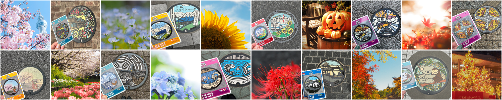

<Profile>
職務経歴
- 保育士として5年、IT系転職をして5年半。
- IT職では、主にアドミニストレーター業務を担当してきました。
- ジュニア開発エンジニアとして業務アプリケーション開発も1年間担当しています。
- 後半はチームリーダーとしてジュニアエンジニアとシニアエンジニアを繋ぐパイプ役も担ってきました。
- 保育で培った「何故その行動をするのか？」と考える癖から、現場の困ったをロジカルに原因と対策を考え提案することが得意です。
- 写真撮影
- マンホール巡り
<Skills>
技術系
- Excel VBA / 関数
- React / Vue.js / JavaScript / TypeScript
- HTML / CSS
- Laravel / PHP
- WordPress
- Spring Boot / Java
- AppSheet / GAS (Google Apps Script)
コミュニケーションツール
- Slack / Microsoft Teams / Mattermost
- Backlog / Redmine
- GitHub
<Works>
×